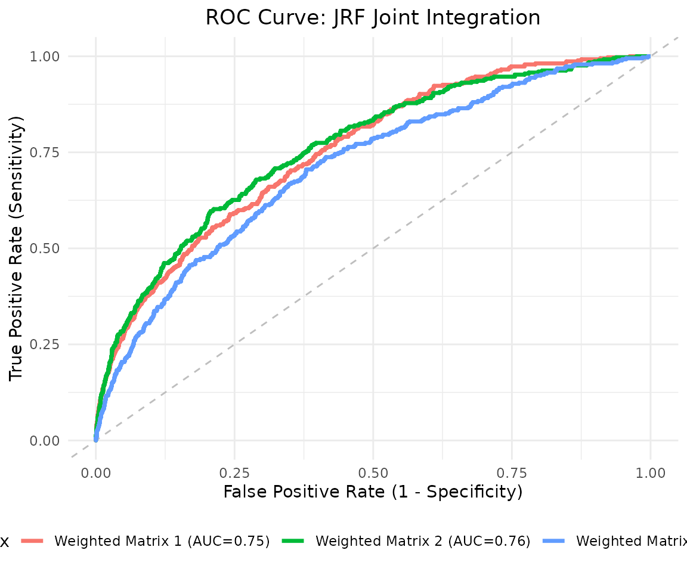
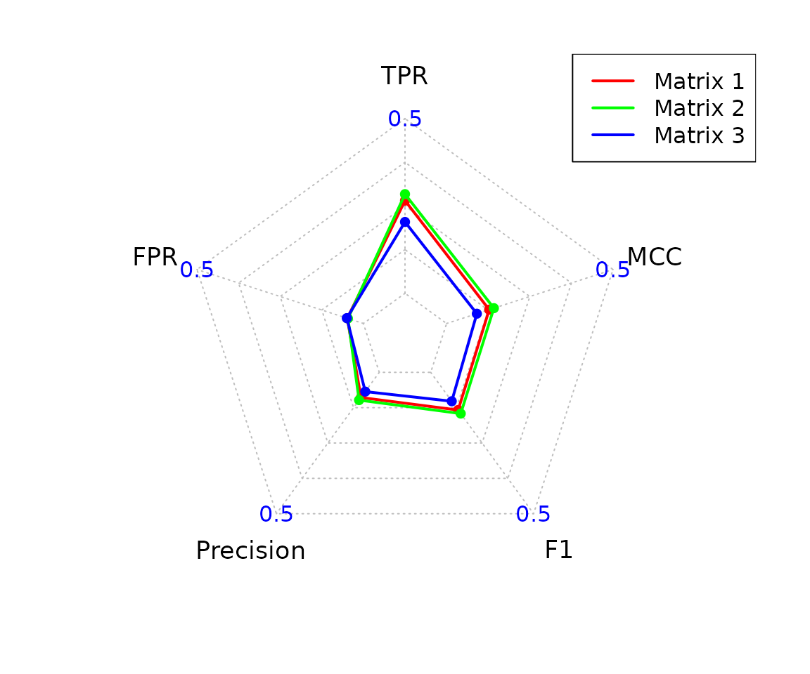
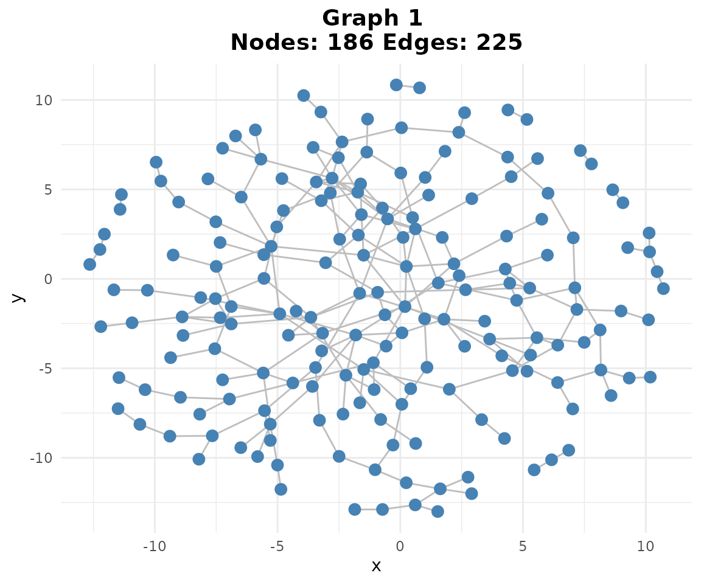
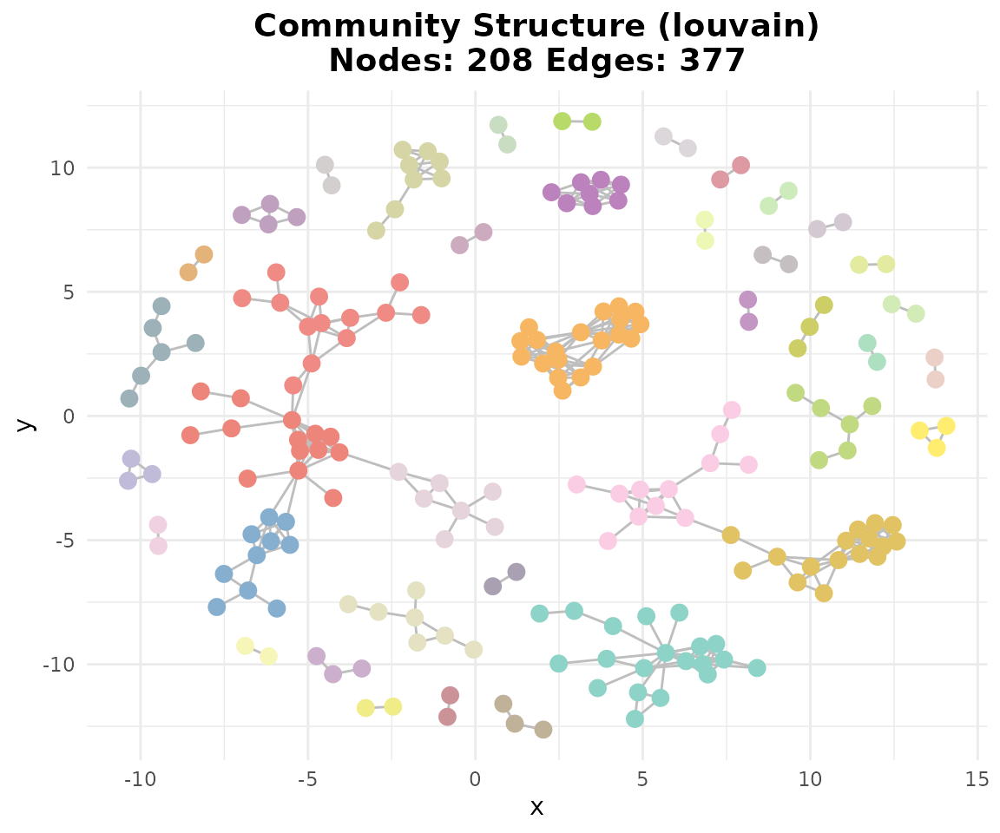
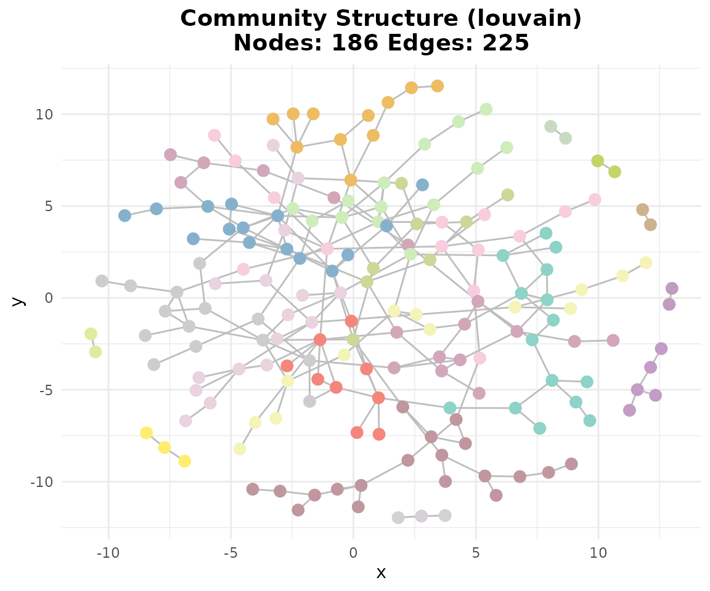
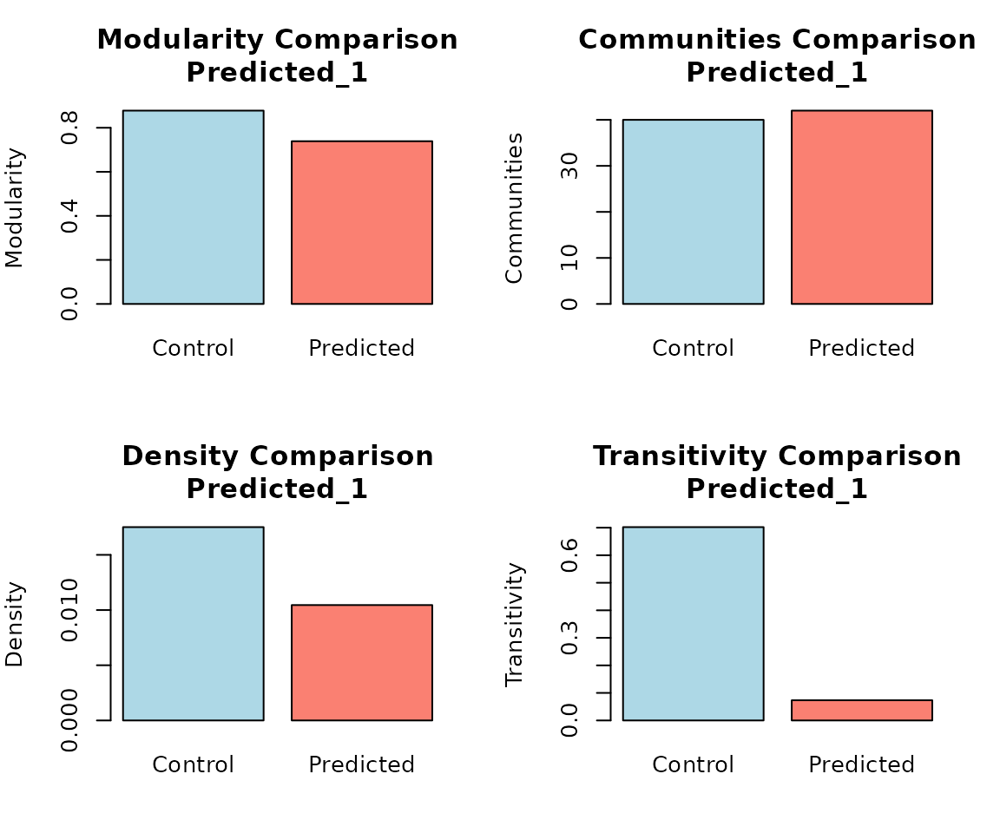

scGraphVerse Case Study: Zero-Inflated Simulation and GRN Inference
Francesco Cecere
Source:vignettes/simulation_study.Rmd
simulation_study.RmdSimulation study
In this case study, we use scGraphVerse to:
- Define a ground-truth regulatory network from high-confidence STRINGdb interactions.
- Simulate zero-inflated single-cell RNA-seq count data that respects the ground truth.
- Infer gene regulatory networks using JRF.
- Evaluate performance with ROC curves, precision–recall scores, and community similarity.
- Build consensus networks and perform edge mining.
1. Defining a Ground-Truth Network from STRINGdb
We select 500 top-variable T-cell genes and fetch high-confidence edges (score ≥ 900) from STRINGdb as our ground truth.
# 1. Download PBMC data
url <- "https://www.dropbox.com/s/r8qwsng79rhp9gf/SCA_scRNASEQ_TISSUE_WHOLE_BLOOD.RDS?dl=1"
seu <- download_Atlas(file_url = url)
# 2. Select top 500 T-cell genes
genes <- selgene(
object = seu,
top_n = 500,
cell_type = "T_cells",
cell_type_col = "CELL_TYPE",
remove_rib = TRUE,
remove_mt = TRUE
)
#> Using Seurat assay 'RNA' slot 'data' (log-normalized).
#> Subsetted to 923 cells where CELL_TYPE = 'T_cells'.
#> Removed mitochondrial genes matching '^MT-'.
#> Removed ribosomal genes matching '^RP[SL]'.
#> Top 500 genes selected based on mean expression.
# 3. Retrieve STRINGdb adjacency
str_res <- stringdb_adjacency(
genes = genes,
species = 9606,
required_score = 900,
keep_all_genes = FALSE
)
#> Initializing STRINGdb...
#> Mapping genes to STRING IDs...
#> Mapped 500 genes to STRING IDs.
#> Retrieving **physical** interactions from STRING API...
#> Found 377 STRING physical interactions.
#> Adjacency matrices constructed successfully.
wadj_truth <- str_res$weighted
adj_truth <- str_res$binary
# 4. Symmetrize and sort
common <- intersect(rownames(adj_truth), colnames(adj_truth))
adj_truth <- adj_truth[common, common]
adj_truth <- adj_truth[order(rownames(adj_truth)), order(colnames(adj_truth))]
# 5. Visualize network
gtruth <- graph_from_adjacency_matrix(adj_truth, mode = "undirected")
ggraph(gtruth, layout = "fr") +
geom_edge_link(color = "gray") +
geom_node_point(color = "steelblue") +
ggtitle(paste0("Ground Truth: ", vcount(gtruth), " nodes, ", ecount(gtruth), " edges")) +
theme_minimal()2. Simulating Zero-Inflated Count Data
We simulate three batches (n=50 cells each) of count matrices that follow the ground-truth network topology with dropout.
# Simulation parameters
nodes <- nrow(adj_truth)
sims <- zinb_simdata(
n = 50,
p = nodes,
B = adj_truth,
mu_range = list(c(1,4), c(1,7), c(1,10)),
mu_noise = c(1,3,5),
theta = c(1,0.7,0.5),
pi = c(0.2,0.2,0.2),
kmat = 3,
depth_range = c(0.8*nodes*3, 1.2*nodes*3)
)
# Transpose to cells × genes
count_matrices <- lapply(sims, t)
# Inspect sparsity
sparsity <- sapply(count_matrices, function(mat) mean(mat == 0))3. Inferring Networks with JRF
We run Joint Random Forests across the simulated batches to infer shared and batch-specific regulatory edges.
networks_joint <- infer_networks(
count_matrices_list = count_matrices,
method = "JRF",
nCores = 10
)
# Weighted adjacency
wadj_list <- generate_adjacency(networks_joint)
# Symmetrize weights
swadj_list <- symmetrize(wadj_list, weight_function = "mean")4. ROC Curve and AUC
Plot the ROC curve comparing continuous edge weights to the binary ground truth.
roc_res <- plotROC(
swadj_list,
adj_truth,
plot_title = "ROC Curve: JRF Joint Integration",
is_binary = FALSE
)
roc_res$plot
auc_joint <- roc_res$auc4.1. Precision–Recall and Graph Visualization
Compute precision scores and visualize the binary networks.
# Binary cutoff at 95th percentile
binary_listj <- cutoff_adjacency(
count_matrices = count_matrices,
weighted_adjm_list = swadj_list,
n = 2,
method = "JRF",
quantile_threshold = 0.95,
nCores = 10,
debug = TRUE
)
#> [Method: JRF] Matrix 1 → Cutoff = 0.55365
#> [Method: JRF] Matrix 2 → Cutoff = 0.58988
#> [Method: JRF] Matrix 3 → Cutoff = 0.58661
# Precision scores
pscores_joint <- pscores(adj_truth, binary_listj)
print(pscores_joint)
#> $Statistics
#> Predicted_Matrix TP TN FP FN TPR FPR Precision F1
#> 1 Matrix 1 131 20403 748 246 0.3474801 0.03536476 0.1490330 0.2085987
#> 2 Matrix 2 130 20357 794 247 0.3448276 0.03753960 0.1406926 0.1998463
#> 3 Matrix 3 103 20342 809 274 0.2732095 0.03824878 0.1129386 0.1598138
#> MCC
#> 1 0.2068747
#> 2 0.1988703
#> 3 0.1530142
#>
#> $Radar
#> $Radar$data
#> TPR FPR Precision F1 MCC
#> Max 0.5000000 0.50000000 0.5000000 0.5000000 0.5000000
#> Min 0.0000000 0.00000000 0.0000000 0.0000000 0.0000000
#> Matrix 1 0.3474801 0.03536476 0.1490330 0.2085987 0.2068747
#> Matrix 2 0.3448276 0.03753960 0.1406926 0.1998463 0.1988703
#> Matrix 3 0.2732095 0.03824878 0.1129386 0.1598138 0.1530142
#>
#> $Radar$plot
# Network plot
title <- "JRF Binary Networks"
plotg(binary_listj)5. Consensus Networks and Community Similarity
Aggregate inferred binaries by majority vote and compare community structure to ground truth.
# Consensus matrix
consensus <- create_consensus(binary_listj, method = "vote")
plotg(list(consensus))
# Compare consensus to truth
evaluate_consensus <- compare_consensus(consensus_matrix = consensus, reference_matrix = adj_truth, false_plot = FALSE)
# Community detection
comm_truth <- community_path(adj_truth)
#> Detecting communities...
#> Running pathway enrichment...
#> 'select()' returned 1:1 mapping between keys and columns
#> Reading KEGG annotation online: "https://rest.kegg.jp/link/hsa/pathway"...
#> Reading KEGG annotation online: "https://rest.kegg.jp/list/pathway/hsa"...
#> 'select()' returned 1:1 mapping between keys and columns
#> 'select()' returned 1:1 mapping between keys and columns
#> 'select()' returned 1:1 mapping between keys and columns
#> 'select()' returned 1:1 mapping between keys and columns
#> 'select()' returned 1:1 mapping between keys and columns
#> 'select()' returned 1:1 mapping between keys and columns
#> 'select()' returned 1:1 mapping between keys and columns
#> 'select()' returned 1:1 mapping between keys and columns
#> 'select()' returned 1:1 mapping between keys and columns
#> 'select()' returned 1:1 mapping between keys and columns
#> 'select()' returned 1:1 mapping between keys and columns
#> 'select()' returned 1:1 mapping between keys and columns
comm_cons <- community_path(consensus)
#> Detecting communities...
#> Running pathway enrichment...
#> 'select()' returned 1:1 mapping between keys and columns
#> 'select()' returned 1:1 mapping between keys and columns
#> 'select()' returned 1:1 mapping between keys and columns
#> 'select()' returned 1:1 mapping between keys and columns
#> 'select()' returned 1:1 mapping between keys and columns
#> 'select()' returned 1:1 mapping between keys and columns
#> 'select()' returned 1:1 mapping between keys and columns
#> 'select()' returned 1:1 mapping between keys and columns
#> 'select()' returned 1:1 mapping between keys and columns
#> 'select()' returned 1:1 mapping between keys and columns
# Similarity
sim_score <- community_similarity(comm_truth, list(comm_cons))
5.1. Edge Mining
Identify true positive edges in the consensus network using edge mining.
em <- edge_mining(list(consensus), adj_truth, query_edge_types = "TP")
sessionInfo()
#> R version 4.4.2 (2024-10-31)
#> Platform: x86_64-pc-linux-gnu
#> Running under: Ubuntu 20.04.2 LTS
#>
#> Matrix products: default
#> BLAS: /usr/lib/x86_64-linux-gnu/blas/libblas.so.3.9.0
#> LAPACK: /usr/lib/x86_64-linux-gnu/lapack/liblapack.so.3.9.0
#>
#> locale:
#> [1] LC_CTYPE=en_US.UTF-8 LC_NUMERIC=C
#> [3] LC_TIME=it_IT.UTF-8 LC_COLLATE=en_US.UTF-8
#> [5] LC_MONETARY=it_IT.UTF-8 LC_MESSAGES=en_US.UTF-8
#> [7] LC_PAPER=it_IT.UTF-8 LC_NAME=C
#> [9] LC_ADDRESS=C LC_TELEPHONE=C
#> [11] LC_MEASUREMENT=it_IT.UTF-8 LC_IDENTIFICATION=C
#>
#> time zone: Europe/Rome
#> tzcode source: system (glibc)
#>
#> attached base packages:
#> [1] stats graphics grDevices utils datasets methods base
#>
#> other attached packages:
#> [1] lubridate_1.9.4 forcats_1.0.0 stringr_1.5.1 dplyr_1.1.4
#> [5] purrr_1.0.4 readr_2.1.5 tidyr_1.3.1 tibble_3.2.1
#> [9] tidyverse_2.0.0 ggraph_2.2.1 ggplot2_3.5.2 igraph_2.1.4
#> [13] scGraphVerse_0.1.0 BiocStyle_2.34.0
#>
#> loaded via a namespace (and not attached):
#> [1] IRanges_2.40.1 R.methodsS3_1.8.2
#> [3] gld_2.6.7 goftest_1.2-3
#> [5] Biostrings_2.74.1 vctrs_0.6.5
#> [7] ggtangle_0.0.6 spatstat.random_3.3-3
#> [9] perturbR_0.1.3 proxy_0.4-27
#> [11] digest_0.6.37 png_0.1-8
#> [13] Exact_3.3 pcaPP_2.0-5
#> [15] ggrepel_0.9.6 deldir_2.0-4
#> [17] parallelly_1.43.0 hdrcde_3.4
#> [19] MASS_7.3-54 pkgdown_2.1.2
#> [21] reshape2_1.4.4 httpuv_1.6.16
#> [23] foreach_1.5.2 BiocGenerics_0.52.0
#> [25] qvalue_2.38.0 withr_3.0.2
#> [27] xfun_0.52 ggfun_0.1.8
#> [29] ggpubr_0.6.0 survival_3.2-11
#> [31] memoise_2.0.1 clusterProfiler_4.14.6
#> [33] gson_0.1.0 systemfonts_1.2.2
#> [35] networkD3_0.4.1 ragg_1.4.0
#> [37] tidytree_0.4.6 zoo_1.8-14
#> [39] gtools_3.9.5 pbapply_1.7-2
#> [41] R.oo_1.27.0 Formula_1.2-6
#> [43] KEGGREST_1.46.0 promises_1.3.2
#> [45] httr_1.4.7 rstatix_0.7.2
#> [47] globals_0.17.0 hash_2.2.6.3
#> [49] fitdistrplus_1.2-2 fmsb_0.7.6
#> [51] rstudioapi_0.17.1 UCSC.utils_1.2.0
#> [53] miniUI_0.1.2 generics_0.1.3
#> [55] DOSE_4.0.1 reactome.db_1.89.0
#> [57] curl_6.2.2 S4Vectors_0.44.0
#> [59] zlibbioc_1.52.0 polyclip_1.10-7
#> [61] GenomeInfoDbData_1.2.13 SparseArray_1.6.2
#> [63] xtable_1.8-4 desc_1.4.3
#> [65] pracma_2.4.4 doParallel_1.0.17
#> [67] JRF_0.1-4 evaluate_1.0.3
#> [69] S4Arrays_1.6.0 hms_1.1.3
#> [71] GenomicRanges_1.58.0 bookdown_0.43
#> [73] irlba_2.3.5.1 colorspace_2.1-1
#> [75] ROCR_1.0-11 readxl_1.4.5
#> [77] reticulate_1.42.0 spatstat.data_3.1-6
#> [79] magrittr_2.0.3 lmtest_0.9-40
#> [81] later_1.4.2 viridis_0.6.5
#> [83] ggtree_3.14.0 lattice_0.20-44
#> [85] spatstat.geom_3.3-6 future.apply_1.11.3
#> [87] scattermore_1.2 XML_3.99-0.18
#> [89] cowplot_1.1.3 matrixStats_1.5.0
#> [91] RcppAnnoy_0.0.22 class_7.3-19
#> [93] pillar_1.10.2 nlme_3.1-152
#> [95] iterators_1.0.14 caTools_1.18.3
#> [97] compiler_4.4.2 RSpectra_0.16-2
#> [99] stringi_1.8.7 DescTools_0.99.60
#> [101] tensor_1.5 SummarizedExperiment_1.36.0
#> [103] plyr_1.8.9 fda_6.2.0
#> [105] crayon_1.5.3 abind_1.4-8
#> [107] gridGraphics_0.5-1 chron_2.3-62
#> [109] haven_2.5.4 sp_2.2-0
#> [111] graphlayouts_1.2.2 org.Hs.eg.db_3.20.0
#> [113] bit_4.6.0 rootSolve_1.8.2.4
#> [115] fastmatch_1.1-6 codetools_0.2-18
#> [117] textshaping_1.0.0 bslib_0.9.0
#> [119] e1071_1.7-16 lmom_3.2
#> [121] fds_1.8 plotly_4.10.4
#> [123] mime_0.13 multinet_4.2.2
#> [125] splines_4.4.2 Rcpp_1.0.14
#> [127] fastDummies_1.7.5 cellranger_1.1.0
#> [129] datastructures_0.2.9 knitr_1.50
#> [131] blob_1.2.4 robin_2.1.0
#> [133] fs_1.6.6 listenv_0.9.1
#> [135] expm_1.0-0 ggsignif_0.6.4
#> [137] ggplotify_0.1.2 sqldf_0.4-11
#> [139] Matrix_1.7-3 tzdb_0.5.0
#> [141] tweenr_2.0.3 pkgconfig_2.0.3
#> [143] tools_4.4.2 cachem_1.1.0
#> [145] RSQLite_2.3.9 viridisLite_0.4.2
#> [147] DBI_1.2.3 distributions3_0.2.2
#> [149] graphite_1.52.0 fastmap_1.2.0
#> [151] rmarkdown_2.29 scales_1.3.0
#> [153] grid_4.4.2 ica_1.0-3
#> [155] Seurat_5.3.0 broom_1.0.8
#> [157] sass_0.4.10 patchwork_1.3.0
#> [159] INetTool_0.1.0 BiocManager_1.30.25
#> [161] dotCall64_1.2 graph_1.84.1
#> [163] carData_3.0-5 RANN_2.6.2
#> [165] farver_2.1.2 tidygraph_1.3.1
#> [167] gsubfn_0.7 yaml_2.3.10
#> [169] deSolve_1.40 MatrixGenerics_1.18.1
#> [171] cli_3.6.5 stats4_4.4.2
#> [173] lifecycle_1.0.4 askpass_1.2.1
#> [175] uwot_0.2.3 Biobase_2.66.0
#> [177] rainbow_3.8 mvtnorm_1.3-3
#> [179] backports_1.5.0 BiocParallel_1.40.2
#> [181] timechange_0.3.0 gtable_0.3.6
#> [183] ggridges_0.5.6 progressr_0.15.1
#> [185] parallel_4.4.2 pROC_1.18.5
#> [187] ape_5.8-1 jsonlite_2.0.0
#> [189] RcppHNSW_0.6.0 bitops_1.0-9
#> [191] bit64_4.6.0-1 Rtsne_0.17
#> [193] yulab.utils_0.2.0 ReactomePA_1.50.0
#> [195] spatstat.utils_3.1-3 SeuratObject_5.1.0
#> [197] proto_1.0.0 jquerylib_0.1.4
#> [199] GOSemSim_2.32.0 spatstat.univar_3.1-2
#> [201] R.utils_2.13.0 lazyeval_0.2.2
#> [203] shiny_1.10.0 htmltools_0.5.8.1
#> [205] enrichplot_1.26.6 GO.db_3.20.0
#> [207] sctransform_0.4.1 data.tree_1.1.0
#> [209] rappdirs_0.3.3 glue_1.8.0
#> [211] STRINGdb_2.18.0 spam_2.11-1
#> [213] XVector_0.46.0 qpdf_1.3.5
#> [215] RCurl_1.98-1.17 treeio_1.30.0
#> [217] mclust_6.1.1 ks_1.14.3
#> [219] gridExtra_2.3 boot_1.3-28
#> [221] R6_2.6.1 fdatest_2.1.1
#> [223] SingleCellExperiment_1.28.1 gplots_3.2.0
#> [225] labeling_0.4.3 cluster_2.1.2
#> [227] aplot_0.2.5 GenomeInfoDb_1.42.3
#> [229] DelayedArray_0.32.0 tidyselect_1.2.1
#> [231] plotrix_3.8-4 ggforce_0.4.2
#> [233] car_3.1-3 AnnotationDbi_1.68.0
#> [235] future_1.40.0 munsell_0.5.1
#> [237] KernSmooth_2.23-20 data.table_1.17.0
#> [239] htmlwidgets_1.6.4 fgsea_1.32.4
#> [241] RColorBrewer_1.1-3 rlang_1.1.6
#> [243] spatstat.sparse_3.1-0 spatstat.explore_3.4-2
#> [245] rentrez_1.2.3